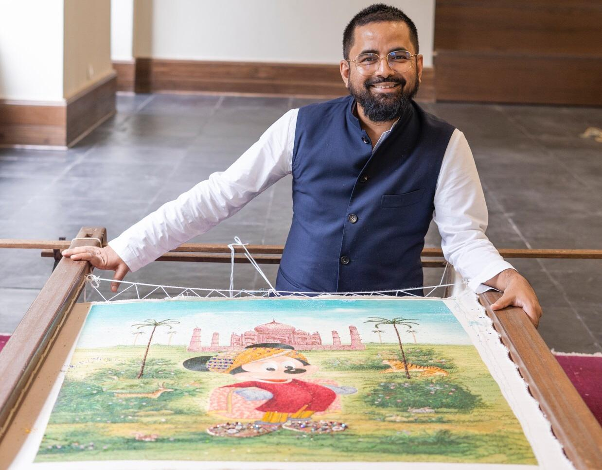

Introduction
When I started studying fashion, I believed design was mostly about silhouettes, trends, and colours. But the more I explored Indian fashion, the more I realised that our industry stands on something much deeper—craftsmanship. And if there is one designer who made me truly understand the soul of Indian craft, it is Sabyasachi Mukherjee.
This blog is not just research—it is a reflection of what I learned while studying his work: how handloom textiles, heritage embroideries, and slow fashion can shape an entire luxury brand. Understanding his design philosophy helped me appreciate the time, skill, and humanity behind every handmade garment.